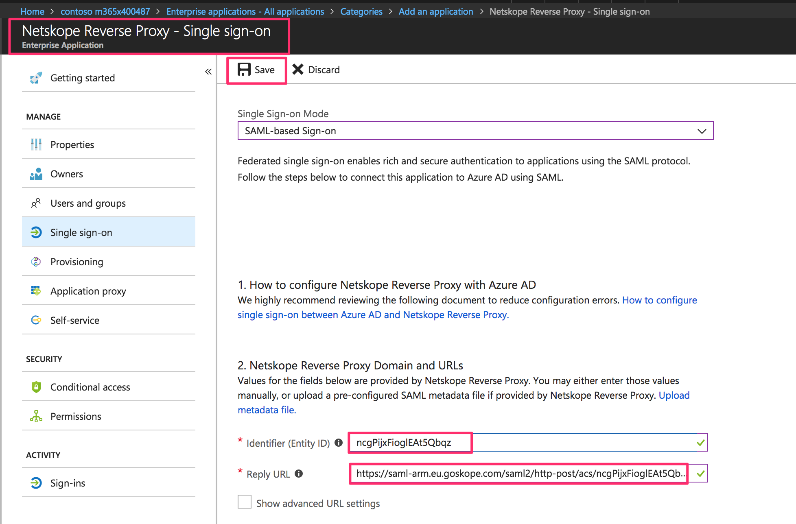

Create the RaaS App
Log in to the Azure Portal with your admin credentials.
Go to Azure Active Directory > Enterprise Applications and click New Application.
Select Non-gallery Application. In the Add your own application page, enter a name for the application (such as Netskope Reverse Proxy), and then click Add.

Select Users and Groups.
Note
Ensure that you are currently in the application configuration section for the application created in step 3. The name of your app is shown in the top-left section of the page banner.

Click Add User and select Users and Groups (under Add Assignment).


Type or select the name of the user(s) or group(s) that should have the option to use the RaaS functionality. Click Select.

Click Assign, and select Single Sign-on.


Click SAML. In the Set up Single Sign-On with SAML page, click the pencil icon next to step 1 Basic SAML Configuration.

Scroll down to the bottom of the page and click Configure Netskope Reverse Proxy.

Locate and copy the SAML Single Sign-on Service URL and the SAML Entity ID, and then download the SAML Signing Certificate–Base64 encoded certificate file.

Exit the current window by clicking X.

Log in to your Netskope admin console, go to Settings > Security Cloud Platform > SAML, and then click Add Account. Select Reverse Proxy as a Service App and enter the following:
Name: Enter a name for the app.
IdP URL: Paste the SAML Single Sign-on service URL copied from the Azure portal.
IdP Issue ID: Paste the SAML Entity copied from the Azure portal.
IdP Certificate: Paste the contents of the SAML Signing Certificate copied from the Azure portal.
App Landing Page: Enter
https://login.microsoftonline.com.
Click Save.
Click the Reverse Proxy as a Service app icon and copy the Organization ID and SAML Proxy ACS URL from the Settings window:


Go back to the Azure administration portal. Ensure that you are in the Single Sign-on configuration page for the application you created previously and enter the following:
Identifier ID (Entity ID): Paste the Organization ID copied in the previous step.
Reply URL: Paste the SAML Proxy ACS URL copied in the previous step.

Click Save.